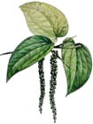

 Black Pepper Xiao Chen
Introduction
Black pepper (Piper nigrum) is a flowering vine in the family Piperaceae, cultivated for its fruit, which is usually dried and used as a spice and seasoning. The same fruit is also used to produce white pepper and green pepper. Black pepper is native to South India and is extensively cultivated there and elsewhere in tropical regions. The fruit, known as a peppercorn when dried, is a small drupe five millimetres in diameter, dark red when fully mature, containing a single seed.
Dried, ground pepper is one of the most common spices in European cuisine and its descendants, having been known and prized since antiquity for both its flavour and its use as a medicine. The spiciness of black pepper is due to the chemical piperine. Ground black peppercorn, usually referred to simply as "pepper", may be found on nearly every dinner table in some parts of the world, often alongside table salt.
Pepper has long been believed to cause sneezing. Some sources say that piperine irritates the nostrils, causing the sneezing; some say that it is just the effect of the fine dust in ground pepper, and some say that pepper is not in fact a very effective sneeze-producer at all. Few if any controlled studies have been carried out to answer the question.
Varieties
- Black Pepper
- Black pepper is produced from the still-green unripe berries of the pepper plant. The berries are cooked briefly in hot water, both to clean them and to prepare them for drying. The heat ruptures cell walls in the fruit, speeding the work of browning enzymes during drying. The berries are dried in the sun or by machine for several days, during which the fruit around the seed shrinks and darkens into a thin, wrinkled black layer around the seed. Once dried, the fruits are called black peppercorns.
- White Pepper
- White pepper consists of the seed only, with the fruit removed. This is usually accomplished by allowing fully ripe berries to soak in water for about a week, during which time the flesh of the fruit softens and decomposes. Rubbing then removes what remains of the fruit, and the naked seed is dried. Alternative processes are used for removing the outer fruit from the seed, including removal of the outer layer from black pepper produced from unripe berries.
- Green Pepper
- Green pepper, like black, is made from the unripe berries. Dried green peppercorns are treated in a manner that retains the green colour, such as treatment with sulphur dioxide or freeze-drying. Pickled peppercorns, also green, are unripe berries preserved in brine or vinegar. Fresh, unpreserved green pepper berries, largely unknown in the West, are used in some Asian cuisine, particularly Thai cuisine. Their flavour has been described as piquant and fresh, with a bright aroma. They decay quickly if not dried or preserved.
- Pink Pepper
- Pink pepper, a rarely seen product, consists of ripe red pepper berries preserved in brine and vinegar. This pink pepper is different from the more-common dried "pink peppercorns", which are the fruits of a plant from a different family, the Peruvian pepper tree, Schinus molle, and its relative the Brazilian pepper tree, Schinus terebinthifolius.
History
Edward Gibbon
Pepper has been a popular spice since prehistoric times. It was probably first cultivated on the Malabar coast of India in what is now the state of Kerala. The 18th Century British historian Edward Gibbon mentions pepper in his renowned work titled The History of the Decline and Fall of the Roman Empire. He wrote that pepper was "a favourite ingredient of the most expensive Roman cookery."
It is commonly believed that during the Middle Ages pepper was used to conceal the taste of partially rotten meat. It was also traded during this period by Arabs in the profitable Indian Ocean spice trade. In fact, it was so valuable that pepper was often used as collateral or even currency and workers who handled pepper were issued clothes without pockets or cuffs to prevent theft.
Until well after the Middle Ages, virtually all of the black pepper found in Europe, the Middle East, and North Africa travelled there from India's Malabar region. By the 16th century, pepper was also being grown in Java, Sunda, Sumatra, Madagascar, Malaysia, and elsewhere in Southeast Asia, but these areas traded mainly with China, or used the pepper locally. Ports in the Malabar area also served as a stop-off point for much of the trade in other spices from farther east in the Indian Ocean.
Worde Trade
Peppercorns are, by monetary value, the most widely traded spice in the world, accounting for 20 per cent of all spice imports in 2002. The price of pepper can be volatile, and this figure fluctuates a great deal year to year; for example, pepper made up 39 per cent of all spice imports in 1998. By weight, slightly more chile peppers are traded worldwide than peppercorns.
In 2003, Vietnam became the world's largest producer and exporter of pepper.
| Country | Tons |
|---|---|
| Vietnam | 82,000 |
| Indonesia | 57,000 |
| Brazil | 37,940 |
| Malaysia | 18,500 |
| India | 17,200 |
This page has been written using text from Wikipedia, the free encyclopedia.